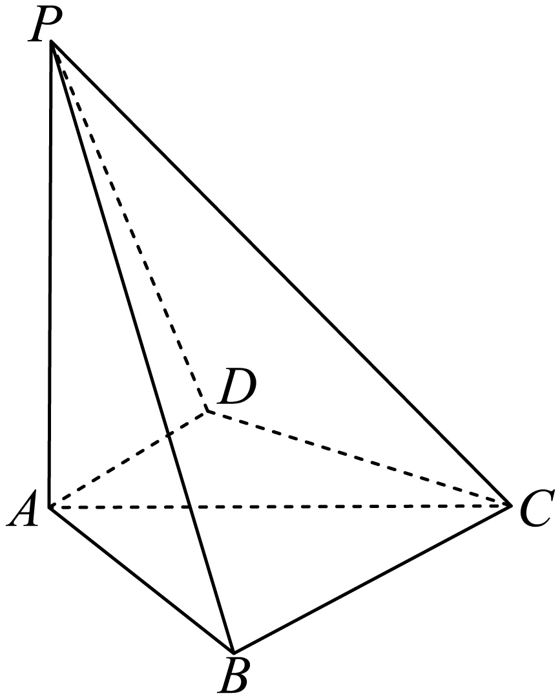

2024 年普通高等学校招生全国统一考试
数 学
本试卷共 4 页，19 小题，满分 150 分。考试用时 120 分钟。
注意事项：
1．答卷前，考生务必将自己的姓名、准考证号填写在答题卡上。
2．回答选择题时，选出每小题答案后，用铅笔把答题卡上对应题目的答案标号涂黑。如需改动，用橡皮擦干净后，再选涂其他答案标号。回答非选择题时，将答案写在答题卡上。写在本试卷上无效。
3．考试结束后，将本试卷和答题卡一并交回。
一、选择题：本题共 8 小题，每小题 5 分，共 40 分。在每小题给出的四个选项中，只有一项是符合题目要求的。
1．已知集合 $A=\{x \mid -5 < x^3 < 5\}$，$B=\{-3,-1,0,2,3\}$，则 $A\cap B=$
A．$\{-1,0\}$B．$\{2,3\}$C．$\{-3,-1,0\}$D．$\{-1,0,2\}$ 2．若 $\dfrac{z}{z-1}=1+\mathrm{i}$，则 $z=$
A．$-1-\mathrm{i}$B．$-1+\mathrm{i}$C．$1-\mathrm{i}$D．$1+\mathrm{i}$ 3．已知向量 $\boldsymbol{a}=(0,1)$，$\boldsymbol{b}=(2,x)$，若 $\boldsymbol{b}\perp(\boldsymbol{b}-4\boldsymbol{a})$，则 $x=$
A．$-2$B．$-1$C．$1$D．$2$ 4．已知 $\cos(\alpha+\beta)=m$，$\tan\alpha\tan\beta=2$，则 $\cos(\alpha-\beta)=$
A．$-3m$B．$-\dfrac{m}{3}$C．$\dfrac{m}{3}$D．$3m$ 5．已知圆柱和圆锥的底面半径相等，侧面积相等，且它们的高均为 $\sqrt{3}$，则圆锥的体积为
A．$2\sqrt 3 \pi$B．$3\sqrt 3 \pi$C．$6\sqrt 3 \pi$D．$9\sqrt 3 \pi$ 6．已知函数 $f(x)=\begin{cases}-x^2-2ax-a,&x<0\\\mathrm{e}^x+\ln(x+1),&x\ge 0\end{cases}$ 在 $\mathbf{R}$ 上单调递增，则 $a$ 的取值范围是
A．$(-\infty,0]$B．$[-1,0]$C．$[-1,1]$D．$[0,\infty)$ 7．当 $x\in[0,2\pi]$ 时，曲线 $y=\sin x$ 与 $y=2\sin\left(3x-\dfrac\pi 6\right)$ 的交点个数为
A．$3$B．$4$C．$6$D．$8$ 8．已知函数 $f(x)$ 的定义域为 $\mathbf{R}$，$f(x)>f(x-1)+f(x-2)$，且当 $x<3$ 时，
$f(x)=x$，则下列结论中一定正确的是
A．$f(10)>100$B．$f(20)>1000$C．$f(10)<1000$D．$f(20)<10000$二、选择题：本题共 3 小题，每小题 6 分，共 18 分。在每小题给出的选项中，有多项符合题目要求。全部选对的得 6 分，部分选对的得部分分，有选错的得 0 分。
9．随着“一带一路”国际合作的深入，某茶叶种植区多措并举推动茶叶出口．为了解推动出口后的亩收入（单位：万元）情况，从该种植区抽取样本，得到推动出口后亩收入的样本均值 $\overline x=2.1$，样本方差 $s^2=0.01$．已知该种植区以往的亩收入 $X$ 服从正态分布 $N(1.8,0.1^2)$，假设推动出口后的亩收入 $Y$ 服从正态分布 $N(\overline x,s^2)$，则（若随机变量 $Z$ 服从正态分布 $N(\mu,\sigma^2)$，则 $P(Z<\mu+\sigma)\approx0.8413$）
A．$P(X>2)>0.2$B．$P(X>2)<0.5$C．$P(Y>2)>0.5$D．$P(Y>2)<0.8$10．设函数 $f(x)=(x-1)^2(x-4)$，则
A．$x=3$ 是 $f(x)$ 的极小值点B．当 $0 < x < 1$ 时，$f(x) < f(x^2)$C．当 $1 < x < 2$ 时，$-4 < f(2x-1) < 0$D．当 $-1 < x < 0$ 时，$f(2-x)>f(x)$11．设计一条美丽的丝带，其造型 可以看作图中曲线 $C$ 的一部分．已知 $C$ 过坐标原点 $O$，且 $C$ 上的点满足：横坐标大于 $-2$；到点 $F(2,0)$ 的距离与到定直线 $x=a$
$(a<0)$ 的距离之积为 $4$，则
A．$a=-2$B．点 $(2\sqrt 2,0)$ 在 $C$ 上C．$C$ 在第一象限的点的纵坐标的最大值为 $1$D．当点 $(x_0,y_0)$ 在 $C$ 上时，$y_0\le\dfrac 4{x_0+2}$三、填空题：本题共 3 小题，每小题 5 分，共 15 分。
12．设双曲线 $C:\dfrac{x^2}{a^2}-\dfrac{y^2}{b^2}=1$ $(a>0,$ $b>0)$ 的左、右焦点分别为 $F_1,F_2$，过 $F_2$ 作平行于 $y$ 轴的直线交 $C$ 于 $A,B$ 两点，若 $|F_1 A|=13$，$|AB|=10$，则 $C$ 的离心率
为$\blank$．
13．若曲线 $y=\mathrm{e}^x+x$ 在点 $(0,1)$ 处的切线也是曲线 $y=\ln(x+1)+a$ 的切线，则
$a=\blank$．
14．甲乙两人各有四张卡片，每张卡片上分别标有一个数字，甲的卡片上分别标有数字 $1,3,5,7$，乙的卡片上分别标有数字 $2,4,6,8$．两人进行四轮比赛，在每轮比赛中，两人各自从自己持有的卡片中随机选一张，并比较所选卡片上的数字大小，数字大的人得 $1$ 分，数字小的人得 $0$ 分，然后各自弃置此轮所选的卡片（弃置的卡片在此后的轮次中不能使用）．则四轮比赛后，甲的总得分不小于 $2$ 的概率
为$\blank$．
四、解答题：本题共 5 小题，共 77 分。解答应写出文字说明、证明过程或演算步骤。
15．（13 分）
记 $\triangle ABC$ 的内角 $A,B,C$ 的对边分别为 $a,b,c$．已知 $\sin C=\sqrt{2}\cos B$，
$a^2+b^2-c^2=\sqrt{2}ab$．
（1）求 $B$；
（2）若 $\triangle ABC$ 的面积为 $3+\sqrt{3}$，求 $c$．
16．（15 分）
已知 $A(0,3)$ 和 $P\left(3,\dfrac{3}{2}\right)$ 为椭圆 $C:\dfrac{x^2}{a^2}+\dfrac{y^2}{b^2}=1$ $(a>b>0)$ 上两点．
（1）求 $C$ 的离心率；
（2）若过 $P$ 的直线 $l$ 交 $C$ 于另一点 $B$，且 $\triangle ABP$ 的面积为 $9$，求 $l$ 的方程．
17．（15 分）
如图，四棱锥 $P-ABCD$ 中，$PA\perp$ 底面 $ABCD$，$PA=PC=2$，$BC=1$，
$AB=\sqrt{3}$．

（1）若 $AD\perp PB$，证明：$AD\para$ 平面 $PBC$；
（2）若 $AD\perp DC$，且二面角 $A-CP-D$ 的正弦值
为 $\dfrac{\sqrt{42}}{7}$，求 $AD$．
18．（17 分）
已知函数 $f(x)=\ln\dfrac{x}{2-x}+ax+b(x-1)^3$．
（1）若 $b=0$，且 $f'(x)\ge 0$，求 $a$ 的最小值；
（2）证明：曲线 $y=f(x)$ 是中心对称图形；
（3）若 $f(x)>-2$ 当且仅当 $1 < x < 2$，求 $b$ 的取值范围．
19．（17 分）
设 $m$ 为正整数，数列 $a_1,a_2,\cdots,a_{4m+2}$ 是公差不为 $0$ 的等差数列，若从中删去两项 $a_i$ 和 $a_j$ $(i < j)$ 后剩余的 $4m$ 项可被平均分为 $m$ 组，且每组的 $4$ 个数都能构成等差数列，则称数列 $a_1,a_2,\cdots,a_{4m+2}$ 是 $(i,j)-$可分数列．
（1）写出所有的 $(i,j),1\le i < j\le 6$，使得数列 $a_1,a_2,\cdots,a_6$ 是 $(i,j)-$可分数列；
（2）当 $m\ge 3$ 时，证明：数列 $a_1,a_2,\cdots,a_{4m+2}$ 是 $(2,13)-$可分数列；
（3）从 $1,2,\cdots,4m+2$ 中一次任取两个数 $i$ 和 $j$ $(i < j)$，记数列 $a_1,a_2,\cdots,a_{4m+2}$ 是 $(i,j)-$可分数列的概率为 $P_m$，证明：$P_m>\dfrac{1}{8}$．